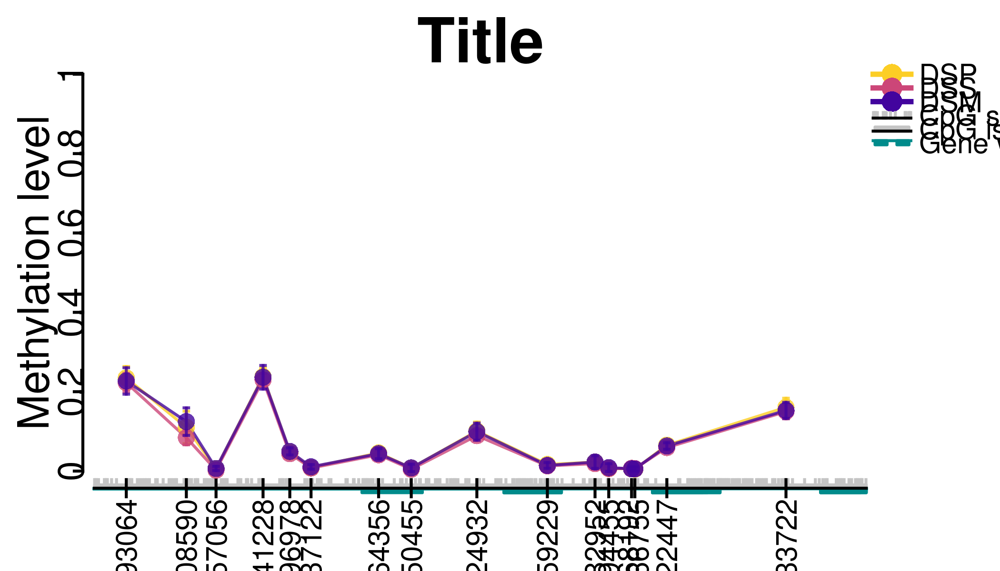
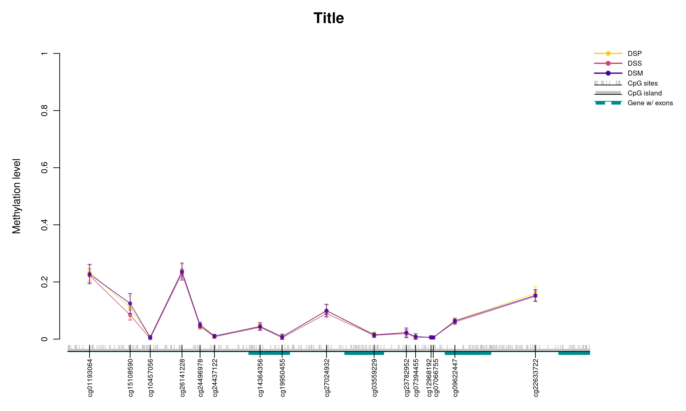

methylation-plots.RmdMethylation error plots are useful tool for visual exploration of the methylation status. The mean methylation value together with the confidence interval is plotted on y-axis for CpG sites of interest. It facilitates the comparison of methylation status among different groups of samples. meNetpackage offers two functions for methylation error plots: plotCI_meCpG and plotCI_meCGI. The former function can be used for any set of CpG sites while the latter function is used to check the methylation status of a CpG island.
We use data sets included within the package to demonstrate the usage of mentioned functions. Bacalini et al. (Bacalini et al. 2015)
library(meNet)
some_cgs <- rownames(Bacalini_betaValues)[1:5]
plotCI_meCpG(beta_values=Bacalini_betaValues, sample_groups=Bacalini_sampleSheet,
chr=21, first_coord=44494624, last_coord=44496989,
title="Title", x_label="", y_label="Methylation level", cg_names=TRUE,
plot_cgi=TRUE, plot_cg=TRUE, plot_gene=TRUE, plot_exon=TRUE,
plot_legend=TRUE, legend_cex=1.2, text_cex=1, cg_names_expand=1.5)
#> Warning in plotCI_meCpG(beta_values = Bacalini_betaValues, sample_groups =
#> Bacalini_sampleSheet, : Plotting outside of bounds.
knitr::include_graphics("./plots/trial.png")
Bacalini, Maria Giulia, Davide Gentilini, Alessio Boattini, Enrico Giampieri, Chiara Pirazzini, Cristina Giuliani, Elisa Fontanesi, et al. 2015. “Identification of a Dna Methylation Signature in Blood Cells from Persons with down Syndrome.” Aging (Albany NY) 7 (2): 82.